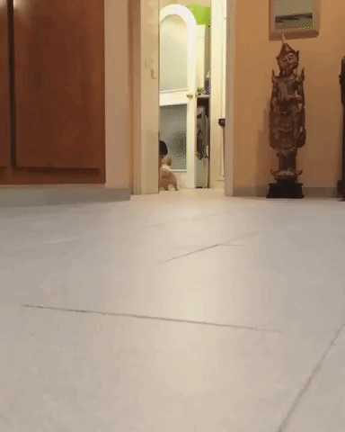
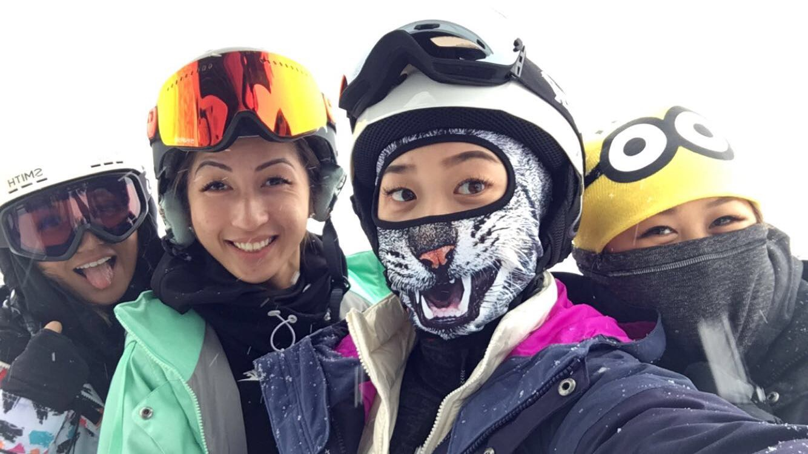

ABOUT ME
I was born in Seoul, South Korea but Portland, Oregon will always be my home. I graduated from Oregon State University with a Bachelor of Science in Human Development and Family Sciences in 2015. I worked for Impartial Medical Opinions (IMO) for a little over a year, where I started as a collator and moved my way up to supporting a team of 34 doctors. Organizing their patient charts, and scheduling appointments or legal follow-up events, such as phone conferences, addendums, and trials. IMO shortly after got bought out by a corporation, ExamWorks (EW). My manager promoted me to the Project Manager role to help merge two companies together and help run operations. I worked closely with the IT team to propose changes to the database system (IMECentric) so that the staff could complete tasks more efficiently and get printers, computers, phones, desks, and accounts set up. It was gratifying each time we came up with a solution, which sparked my interest in learning how the IT team generated the proposed ideas in the new system updates.INTERESTS AND HOBBIES
I love living in the Pacific North West because the sky is the limit when it comes to activities to do. During the Fall, there are plenty of pumpkin patches and haunted houses to visit. In the Winter, I get to go snowboarding at Mt. Hood Meadows and the commute is only an hour. If I want to go hiking, there are tons of spots to check out in Oregon and only 30 minutes to a couple hours away, depending on which hiking location I end up going to. And during the Spring and Summer, there are tons of events that Oregon has to offer, such as the Oregon Brewers Festival and Portland Burger Week. I'm extremely grateful to experience all four seasons of the year and have access to both rural and urban areas. Portland has become more pet-friendly over the years and even has their own Corgi Meetup Group. I currently do not have any pets but the first dog my boyfriend and I are going to get is a Corgi!  PROJECTS